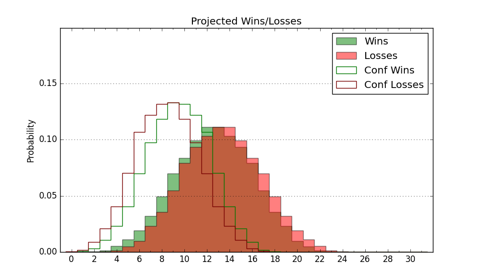

| Home | Game Probabilities | Conferences | Preseason Predictions | Odds Charts | NCAA Tournament |
| City: | Cedar City, Utah | |
| Conference: | Western (1st)
| |
| Record: | 0-0 (Conf) 0-2 (Overall) | |
| Ratings: | Comp.: -0.3 (166th) Net: 22.3 (33rd) Off: 116.6 (25th) Def: 94.3 (111th) SoR: 0.0 (264th) |
| Remaining | ||||||
|---|---|---|---|---|---|---|
| Date | Opponent | Win Prob | Pred. | |||
| 11/25 | (N) Texas St. (203) | 58.2% | W 72-69 | |||
| 11/30 | Montana St. (122) | 55.0% | W 73-72 | |||
| 12/3 | @ Idaho St. (295) | 60.6% | W 71-68 | |||
| 12/10 | (N) Cal St. Fullerton (151) | 46.8% | L 72-73 | |||
| 12/17 | Northern Arizona (268) | 81.1% | W 80-69 | |||
| 12/21 | @ Colorado (54) | 12.5% | L 68-82 | |||
| 12/28 | @ New Mexico St. (153) | 32.4% | L 69-74 | |||
| 12/31 | UT Rio Grande Valley (296) | 84.3% | W 85-73 | |||
| 1/5 | @ Tarleton St. (172) | 36.5% | L 69-72 | |||
| 1/7 | @ Abilene Christian (169) | 35.5% | L 71-76 | |||
| 1/12 | Sam Houston St. (156) | 62.4% | W 72-68 | |||
| 1/14 | Stephen F. Austin (148) | 61.4% | W 77-73 | |||
| 1/19 | New Mexico St. (153) | 62.0% | W 73-70 | |||
| 1/21 | @ Seattle (133) | 28.6% | L 69-76 | |||
| 1/26 | Utah Valley (139) | 60.0% | W 72-70 | |||
| 2/1 | @ California Baptist (229) | 48.0% | L 71-72 | |||
| 2/4 | @ Dixie St. (278) | 57.5% | W 78-76 | |||
| 2/9 | Tarleton St. (172) | 66.2% | W 73-68 | |||
| 2/11 | @ Utah Valley (139) | 30.6% | L 68-74 | |||
| 2/17 | Dixie St. (278) | 82.2% | W 83-72 | |||
| 2/23 | @ UT Arlington (275) | 56.8% | W 71-69 | |||
| 2/25 | @ Sam Houston St. (156) | 32.8% | L 67-72 | |||
| 3/1 | Grand Canyon (74) | 40.5% | L 68-71 | |||
| 3/3 | California Baptist (229) | 75.9% | W 76-68 | |||
| Previous | Game Score | |||||
| Date | Opponent | Win Prob | Result | Off | Def | Net |
| 11/7 | @New Mexico (84) | 18.5% | L 81-89 | 3.0 | -0.9 | 2.1 |
| 11/18 | @Kansas (13) | 5.1% | L 76-82 | 5.3 | 19.2 | 24.5 |
| Stats & Trends | |||||
|---|---|---|---|---|---|
| Current | Day | Week | Month | Season | |
| Composite | -0.3 | +1.9 | +2.5 | +2.5 | +2.5 |
| Comp Rank | 166 | +19 | +21 | +20 | +20 |
| Net Efficiency | 22.3 | +3.7 | +26.9 | -- | -- |
| Net Rank | 33 | +22 | +174 | -- | -- |
| Off Efficiency | 116.6 | -0.8 | +12.9 | -- | -- |
| Off Rank | 25 | +3 | +100 | -- | -- |
| Def Efficiency | 94.3 | +4.5 | +14.1 | -- | -- |
| Def Rank | 111 | +58 | +145 | -- | -- |
| SoS Rank | 13 | +36 | +95 | -- | -- |
| Exp. Wins | 12.6 | +0.4 | +0.5 | +0.3 | +0.3 |
| Exp. Conf Wins | 9.5 | +0.4 | +0.5 | +0.6 | +0.6 |
| Conf Champ Prob | 7.5 | +0.6 | +1.3 | +0.9 | +0.9 |

| Advanced Stats | ||
|---|---|---|
| Stat | Value | Rank |
| Off Eff FG % | 0.520 | 125 |
| Off Ast Ratio | 0.129 | 225 |
| Off ORB% | 0.362 | 49 |
| Off TO Rate | 0.140 | 92 |
| Off FT Ratio | 0.262 | 270 |
| Def Eff FG % | 0.493 | 178 |
| Def Ast Ratio | 0.111 | 60 |
| Def ORB% | 0.179 | 33 |
| Def TO Rate | 0.207 | 50 |
| Def FT Ratio | 0.415 | 284 |